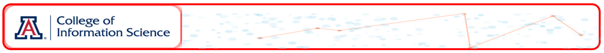
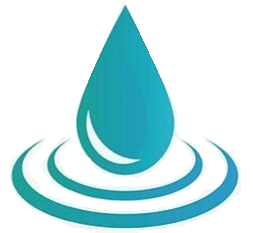

Title: “Water Insecurity in the U.S.” (TidyTuesday, 2025-01-28)
Source: American Community Survey (ACS), USGS Vizlab
Curated by: Niha Pereira
Focus: Plumbing insecurity at the U.S. county level
Years covered: 2022 and 2023
Geographic scope: 850+ counties per year
Data files
Repository
|
geoid – County FIPS codename – County nameyear – Survey yeargeometry – County boundariestotal_pop – Total populationplumbing – Households lacking plumbingpercent_lacking_plumbing – % without plumbingThis project analyzes county-level water insecurity in the U.S., focusing on access to complete indoor plumbing in 2022 and 2023. It aims to identify regional disparities and year-over-year trends using spatial and statistical methods. The findings will highlight areas with significant plumbing insecurity to inform efforts toward improving water access equity.
Wednesdy-July-02-2025 